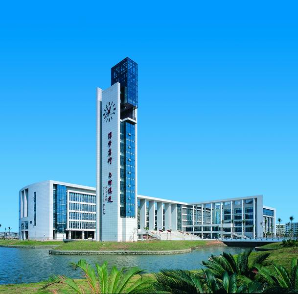

广州大学座落在中国历史文化名城、华南经济文化中心和改革开放前沿广州市，位于国
内一流大学园区——广州大学城的西南端。学校濒临珠江，三面环水，绿草如茵，环境优
美，是陶冶情操、读书治学的好地方。
学校以人才培养为中心工作，突出本科教育的基础地位；以“德才兼备、家国情怀、视野开 阔，爱体育、懂艺术、能力发展性强”作为人才培养目标，把思想政治教育和创新创业教育 融入人才培养全过程。培育了一批创业团队，拥有广州芭蕾舞团、广州歌舞团等高水平的艺 术团体和一批科技文化含量高、学生乐于参与的学生社团和文化品牌项目。
“博学笃行、与时俱进”。今天的广州大学正站在新的起点上，学校将紧紧围绕“立德树人”根本任务，坚持“三个面 向”（面向国际学术前沿，面向国家重大战略需求，面向国家和区域经济社会需求），深度实施与广州发展的“三 个对接”（对接城市建设，对接城市创新，对接城市开放），以解放思想、改革创新为动力，着力推进内涵建设、 创新引领、特色发展和开放办学，全面加强党的建设，全面推进高水平大学建设，努力将学校建设成为与广州城市 发展深度融合、与广州城市地位相得益彰，具有学科、城市区域和国际化特色的高水平大学。
学校以人才培养为中心工作，突出本科教育的基础地位；以“德才兼备、家国情怀、视野开 阔，爱体育、懂艺术、能力发展性强”作为人才培养目标，把思想政治教育和创新创业教育 融入人才培养全过程。培育了一批创业团队，拥有广州芭蕾舞团、广州歌舞团等高水平的艺 术团体和一批科技文化含量高、学生乐于参与的学生社团和文化品牌项目。
“博学笃行、与时俱进”。今天的广州大学正站在新的起点上，学校将紧紧围绕“立德树人”根本任务，坚持“三个面 向”（面向国际学术前沿，面向国家重大战略需求，面向国家和区域经济社会需求），深度实施与广州发展的“三 个对接”（对接城市建设，对接城市创新，对接城市开放），以解放思想、改革创新为动力，着力推进内涵建设、 创新引领、特色发展和开放办学，全面加强党的建设，全面推进高水平大学建设，努力将学校建设成为与广州城市 发展深度融合、与广州城市地位相得益彰，具有学科、城市区域和国际化特色的高水平大学。
向下滚动选择学院